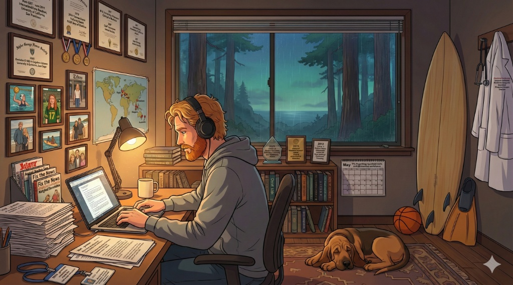

Kevin Keet
Hospitalist & Associate Program Director
Projects
Contact Me
Lo-fi beats

🐕
Frankenstein
Online
*wags tail* 🐕 Woof! Hi there! I'm Frankenstein, Kevin's trusty Bloodhound. Ask me anything about Kevin's work, background, or interests!
What's Kevin researching?
How does Kevin care for patients?
Who's a good boy?
Research & Grants
Put it back
Stanford Site Lead, TEACH-AI
Josiah Macy Jr. Foundation / ARiSE multi-center RCT on generative AI in medical education, 2025 to now
Previous
Next